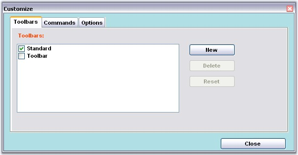

Foreground and Background Settings
Fore color, back color and the Font style can be set for the Customize Dialog using ForeColor, BackColor and Font properties respectively.
|
[C#]
//to change ForeColor this.mainFrameBarManager1.CustomizationDialog.ForeColor = Color.OrangeRed;
//to change BackColor this.mainFrameBarManager1.CustomizationDialog.BackColor = Color.PowderBlue;
//Change the font,font style and size mainFrameBarManager1.CustomizationDialog.Font = new Font("Arial", 8, System.Drawing.FontStyle.Bold); |
|
[VB.NET]
'to change ForeColor Me.mainFrameBarManager1.CustomizationDialog.ForeColor = Color.OrangeRed
'to change BackColor Me.mainFrameBarManager1.CustomizationDialog.BackColor = Color.PowderBlue
'Change the font,font style and size mainFrameBarManager1.CustomizationDialog.Font = New Font("Arial", 8, System.Drawing.FontStyle.Bold) |

Figure 843: ForeColor = "OrangeRed"; BackColor = "PowderBlue"; FontStyle = "Arial, 8f"
Size Settings
Size and the client size of the Customize Dialog can be controlled using the Size property as follows.
|
[C#]
//to change the size of entire dialog this.mainFrameBarManager1.CustomizationDialog.Size = new Size(700, 800); //to change the client area this.mainFrameBarManager1.CustomizationDialog.ClientSize = new Size(600, 700); |
|
[VB.NET]
'to change the size of entire dialog Me.mainFrameBarManager1.CustomizationDialog.Size = New Size(700, 800) 'to change the client area Me.mainFrameBarManager1.CustomizationDialog.ClientSize = New Size(600, 700) |